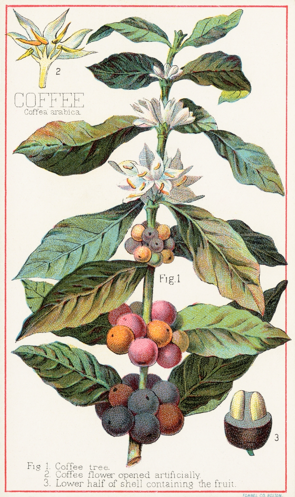

A Guide To Coffee
66% of adults in America drink coffee every day. But for how common coffee is it's just as complex. There are 129 different species in genus Coffea, tens of thousands of different varieties, differnt roasting and processing methods, many different brew methods, and somehow even more drinks ranging from a plain black coffee to the Unicorn Frappucino. This guide will not cover all the complexities of coffee, not even close, but it will scratch the surface of species.
Species
While there are 129 different species of Coffea the majority of species are unfit for commercial production. Only 4 species are commercially produced: Arabic, Robusta, Excelsa, and Liberica. Of those 4 Arabic and Robusta make up roughly 95% of coffee production.
Arabica
Arabica is the most common species produced and sold around the world. Arabica prefers to grow at high altitudes, in shaded areas and int subtropical areas. Arabica contains roughly 1.2% caffeine and is known to have a sweeter, fruitier, more floral flavor profile when compared to Robusta.
Robusta
Robusta is the second most common species of Coffea. Robusta prefers to grow at lower altitudes compared to Arabica and can tolerate direct sun and dryer conditions. Robusta contains roughly 2.2% caffeine and has more earthy, chocolately and bold flavors when compared to Arabica. Fun fact: since Robusta is more robust in what growing conditions it can tolerate it has lead to Robusta being grown more often in poorer conditions. Poorly grown Robusta coffee entering the market has created the misconsception that Robusta as a species is of a lower quality than Arabica.
| Category | Arabica | Robusta |
|---|---|---|
| Altitude | 2,000 - 6,500 ft | 600 - 2,400 ft |
| Caffeine | 1.2% | 2.2% |
| Flavor | sweet, fruity, floral | earthy, chocolately, bold |